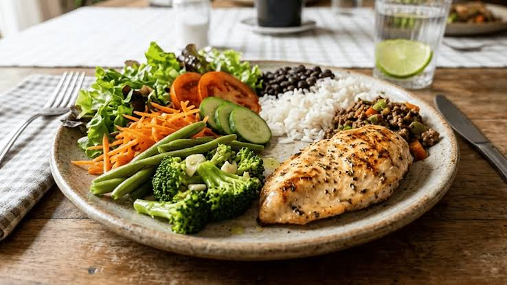
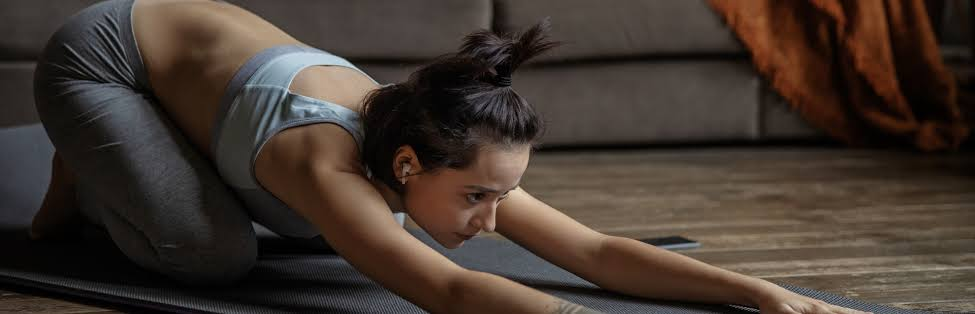

Alimentação saudável

Uma boa alimentação dá energia para estudar e praticar esportes. Prefira alimentos naturais e evite o excesso de açúcar e frituras.
🥦
Verduras e legumes
Cheios de vitaminas e fibras.
🍎
Frutas
Ótimo lanche antes ou depois do exercício.
💧
Água
Beba água ao longo de todo o dia.
Alongamento e descanso

Alongar antes e depois do exercício evita lesões e dores musculares. O descanso e o sono também são parte do treino, pois é quando o corpo se recupera.
Dicas rápidas
- ✅ Beba água durante a atividade.
- ✅ Use roupas e tênis confortáveis.
- ✅ Faça aquecimento antes de começar.
- ✅ Respeite os limites do seu corpo.
- ✅ Durma bem todas as noites.
Cuidar da saúde não é uma tarefa: é um presente que você dá a si mesmo todos os dias.